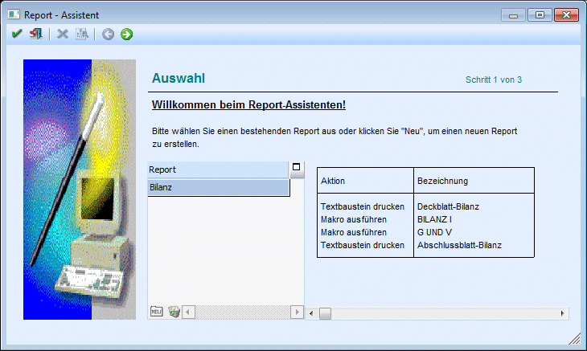
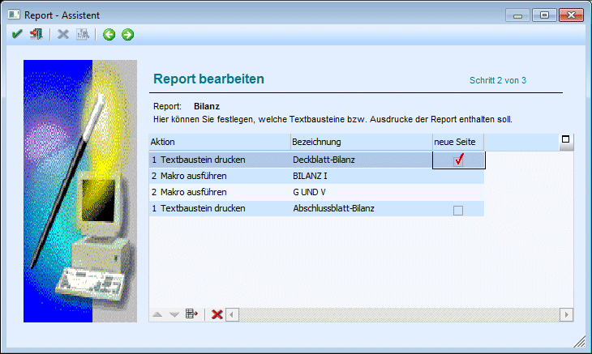
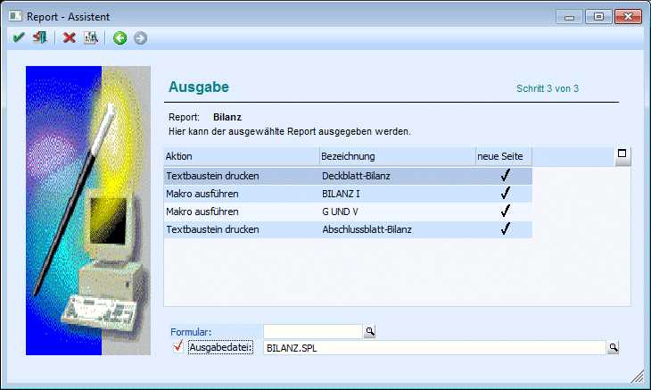
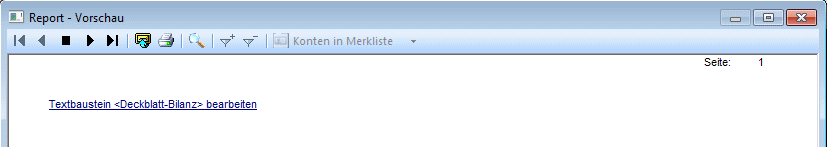
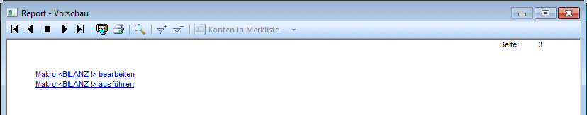
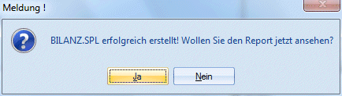

Im Menüpunkt
1 WinLine START
1 Optionen
1 Textbausteine
1 Report-Assistent
können mit dessen Hilfe die verschiedensten Auswertungen zusammengestellt werden. Ein Report besteht aus einem oder mehreren Makros, die bestimmte Aktionen in der WinLine ausführen (z.B. automatische Ausgabe der Bilanz) und Textbausteinen, welche die Kommentierung darstellen. Diese Reports werden in einer SPL-Datei ausgegeben und können ausgegeben bzw. gespeichert werden.
Der Assistent führt durch 3 Schritte:
Schritt 1 - Auswahl:
Im ersten Schritt kann ein bestehender Report ausgewählt, oder ein neuer Report erstellt werden.

Buttons
Ø Ok
Wird dieser Button gedrückt, wird die Auswertung eines Reports gestartet. Ist noch kein Report vorhanden, hat dieser Button keine Funktion.
Ø Ende
Durch Anklicken des ENDE-Buttons bzw. durch Drücken der ESC-Taste wird das Fenster geschlossen. Nicht gespeicherte Daten werden dadurch verworfen.
Ø Neu
Beim Drücken dieses Buttons öffnet sich in der Tabelle ein Eingabefeld, und eine Bezeichnung für einen neuen Report kann eingegeben werden. Nach Bestätigung einer neuen Eingabe gelangt man automatisch in den zweiten Schritt des Assistenten.
Ø Löschen
Ein selektierter Report wird nach bestätigter Sicherheitsabfrage gelöscht.
Ø Vor
Mittels Vor-Button gelangt man in den nächsten Schritt des Assistenten.
Schritt 2 - Report bearbeiten:
Im zweiten Schritt können die gewünschten Textbausteine und Makros ausgewählt, bzw. beim einem bestehenden Report diese Einträge bearbeitet werden.

Ø Aktion
Aus der Auswahllistbox kann zwischen
ü 1 Textbaustein drucken
oder
ü 2 Makro ausführen
gewählt werden.
Ø Bezeichnung
Wurde als Aktion "1-Textbaustein" drucken gewählt, kann hier die Bezeichnung des zu druckenden Textbausteines angegeben werden. Über die Matchcodefunktion kann nach allen bereits angelegten Textbausteinen gesucht werden.
Wurde als Aktion "2-Makro" ausführen gewählt, kann aus der Auswahllistbox ein Makro (sofern vorhanden) ausgewählt werden.
Ø Neue Seite
Beim Druck von mehreren Textbausteinen kann mittels Checkbox gesteuert werden, ob eine neue Seite begonnen, oder auf der alten weitergedruckt werden soll. Vor bzw. nach den Auswertungen aus dem Makro wird immer eine neue Seite begonnen.
Buttons
Ø Hinauf / Hinunter
Mit diesen Buttons können Aktionen innerhalb der Tabelle verschoben werden.
Ø Entfernen
Die selektierte Aktion wird aus der Tabelle entfernt.
Ø Zurück
Damit gelangen Sie in den vorherigen Schritt des Assistenten.
Ø Vor
Damit gelangen Sie in den nächsten Schritt des Assistenten.
Ø Abbruch
Mittels Abbruch-Button wird der Assistent abgebrochen und in den ersten Schritt des Assistenten (Willkommen beim Report-Assistenten) gewechselt.
Ø Ende
Durch Anklicken des ENDE-Buttons bzw. durch Drücken der ESC-Taste wird das Fenster geschlossen. Nicht gespeicherte Daten werden dadurch verworfen.
Schritt 3 - Ausgabe:
Im dritten Schritt kann ein Dateiname für die Ausgabedatei vergeben werden, und die Ausgabe gestartet werden.

In der Tabelle wird der erstellte Report, bzw. die Aktionen usw. nochmals dargestellt.
Ø Ausgabedatei
Diese Reports werden in einer SPL-Datei gespeichert, deren Name hier bestimmt werden kann. Besteht bereits eine Datei gleichen Namens, erfolgt die Abfrage ob diese Datei überschrieben werden soll.
Buttons
Ø Vorschau
Über den Vorschau-Button wird ein Fenster geöffnet, in dem:
ü für einen Textbaustein ein Link dargestellt wird, über den man zum Bearbeiten des Textbausteines gelangt

ü für ein Makro zwei Links dargestellt werden. Über den ersten Link kann das Makro bearbeitet, über den zweiten ausgeführt werden.

Ø Zurück
Damit gelangen Sie in den vorherigen Schritt des Assistenten.
Ø Abbruch
Mittels Abbruch-Button wird der Assistent abgebrochen und in den ersten Schritt des Assistenten (Willkommen beim Report-Assistenten) gewechselt.
Ø Ende
Durch Anklicken des ENDE-Buttons bzw. durch Drücken der ESC-Taste wird das Fenster geschlossen. Nicht gespeicherte Daten werden dadurch verworfen.
Ø Ok
Beim Drücken dieses Buttons wird die Erstellung der Auswertung gestartet und als SPL-Datei gespeichert.
Danach wird folgende Meldung ausgegeben:

Um die gespeicherte Auswertung anzusehen, kann diese Meldung mit "JA" bestätigt werden. Dadurch wird der Spoolviewer geöffnet, und die erstellt Auswertung wird angezeigt.
Wird diese Meldung mit "Nein" bestätigt, kann diese Datei natürlich jederzeit wieder aufgerufen werden (öffnen mittels Spoolviewer).